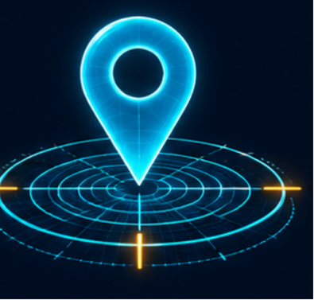

מוצאים את הדרך
באיזה שביל נמצאת הקבוצה?

שני שבילים דומים
דנה מדריכה קבוצת מטיילים בדרך לנקודת מפגש. בצומת שבילים היא מגלה שהשלט נפל. שני השבילים נראים דומים, והיא אינה בטוחה היכן בדיוק הקבוצה נמצאת. דנה עוצרת במקום בטוח כדי לבדוק את המצב.
לדעת היכן אנחנו
לדנה יש מפה של האזור, אבל קשה להתאים בין הסימנים במפה לבין מה שרואים בשטח. העצים מסתירים חלק מהנוף, והגבעות נראות דומות זו לזו.
בטלפון מופיעה נקודה שמסמנת את המיקום, אך כשמתקרבים אליה במפה רואים שהיא קופצת מעט בין שני השבילים. הסוללה גם הולכת ונגמרת.
דנה צריכה להבין מהו המיקום של הקבוצה ואיזו דרך מובילה לנקודת המפגש. הדרך הקצרה ביותר במפה אינה בהכרח הדרך המתאימה לקבוצה.
מבט לחלל
מערכות ניווט משתמשות באותות מלוויינים כדי לעזור לחשב מיקום. ידיעת המיקום היא התחלה חשובה, אבל עדיין צריך לבדוק את תנאי הדרך ולבחור מסלול מתאים.